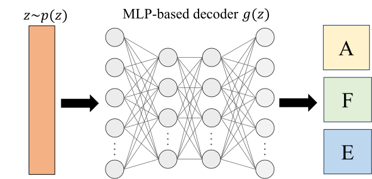
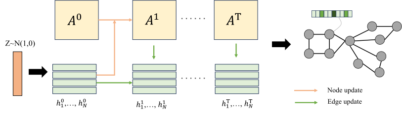
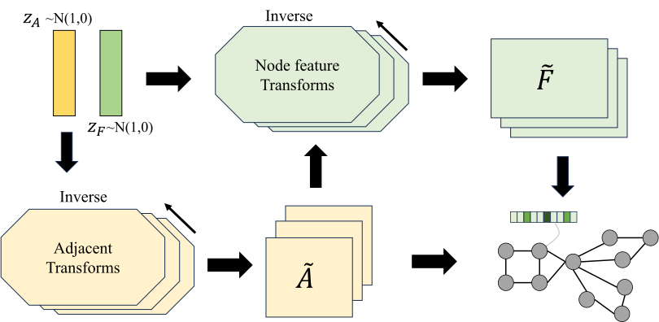
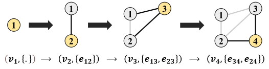
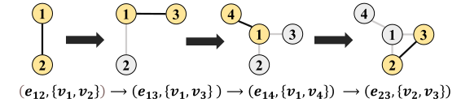
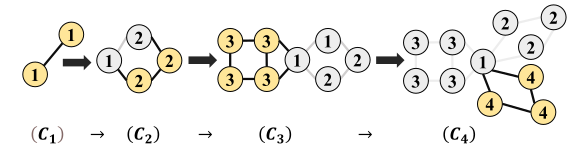
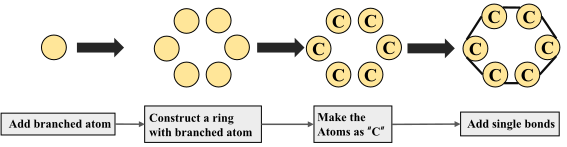

Generative Graph Learning
Generative Graph Learning
The goal of generative graph learning [262, 263, 264, 69] is to understand and learn the distribution of existing graph data, enabling the generation of high-quality graph samples. Generative Graph Learning is significant in studying the underlying structural relationships within graph data, understanding patterns, associations, and hidden information within existing data. To this end, researchers have proposed a large number of synthetic datasets and real-world datasets for research purposes.
Depending on whether auxiliary information is required for graph generation, generative graph learning methods can be categorized into the following two main types: unconditional generative graph learning and conditional generative graph learning.
Unconditional Generative Graph Learning
Unconditional deep graph generation aims to learn from real graphs \(\mathcal{G}\) obtained through sampling, allowing the model’s distribution \(p_{\text{model}}(\mathcal{G})\) to approximate the true distribution \(p(\mathcal{G})\). Based on differences in the generation process, these methods can be divided into two main categories: (1) One-shot generation: This approach constructs probabilistic graph models based on matrix representations, generating all nodes and edges simultaneously; (2) Sequential generation: This approach generates nodes and edges one by one in a sequential manner.
One-Shot Generative Graph Learning
The one-shot generative graph learning method maps the entire graph to a latent representation space with a unified probability distribution during the learning phase. In the inference phase, it generates the graph in one step by sampling from this latent representation space. Based on the approach used for graph generation, this approaches can be further divided into adjacency-matrix-based methods and edge-list-based methods.
Adjacency-matrix-based Methods
The topology of a graph is typically represented by an adjacency matrix, node attribute matrix, and edge feature matrix. Adjacency matrix-based methods primarily aim to learn the underlying distribution of these matrices. During the inference phase, these methods generate all three matrices in a single generation process.
The fundamental challenge lies in achieving a mapping that balances expressiveness and efficiency, often requiring a trade-off between the two. A highly expressive mapping can capture intricate patterns and complex relationships but may come at the cost of increased computational complexity. Conversely, an efficient mapping ensures scalability and faster computations but might sacrifice the ability to represent detailed structural and feature interactions. Finding the optimal balance between these aspects is crucial for developing effective models.
Existing methods based on deep neural network frameworks can be divided into four types:

(1) MLP-Based Methods. These methods use simple MLPs [265, 266] to construct the graph decoder \(g(\textbf{z})\). As shown in Figure 5.1, during the inference phase, a latent graph representation \(\textbf{z}\), which is sampled from a statistical distribution \(p(\textbf{z})\), is passed through an MLP-based decoder \(g(\textbf{z})\), which generates the adjacency matrix \(\textbf{A}\). Depending on the task requirements, node features \(\textbf{F}\) and edge features \(\textbf{E}\) may also be generated simultaneously.

(2) Message-Passing-Based Methods. These methods generate graphs by iteratively optimizing the initial graph using Message Passing Neural Networks (MPNN) [133]. As shown in Figure 5.2, an initial adjacency matrix \(\textbf{A}_0\) and initial node latent representations \(\textbf{H}_0\) are generated first using the sampled latent representation \(\textbf{z}\).
The initial matrices \(\textbf{A}^0\) and \(\textbf{H}^0\) are then iteratively updated through multiple MPNN layers, producing \(\textbf{A}^T\) and \(\textbf{H}^T\) in the \(T_{th}\) intermediate layer, which explicitly capture higher-order correlations between nodes and edges. Such generators can be built using various learning frameworks, including VAEs, GANs [267], or simpler score-based frameworks [268].

(3) Flow-Based Methods. As shown in Figure 5.3, flow-based methods [269] generate the graph \(\mathcal{G} = (\textbf{A}, \textbf{F})\) and the sampled latent prior \(\textbf{z}\) through a unique invertible function. Specifically, flow-based methods aim to learn a series of invertible functions \(z = f_L \circ ... \circ f_1(G)\) that convert graph data \(\mathcal{G}\) into a latent space representation \(\textbf{z} \sim P(\textbf{Z})\) with the same dimensionality. During the inference phase, the model uses the inverse transformations \(\mathcal{G} = f^{-1}_1 \circ ... \circ f^{-1}_L(\textbf{z})\) to reconstruct and generate \(\mathcal{G}\) from the latent representation sampled from \(\textbf{z} \sim P(\textbf{Z})\).
GraphNVP [269] is the first to use invertible functions to generate flow-based molecular graphs. Subsequent research, such as MoFlow [270], MolGrow [271], and EFlow [272], refines the design of invertible functions to achieve improved graph generation performance.
(4) Diffusion-Based Methods. In recent years, diffusion models [264] have rapidly emerged as a new generative paradigm and are widely applied across various fields. The working mechanism of diffusion models is divided into two stages: forward diffusion and reverse diffusion. In the forward diffusion stage, the model starts from a simple initial distribution and progressively adds noise, introducing a structured amount of noise at each step. In the reverse diffusion stage, the model begins with noisy data samples and gradually removes the noise, recovering the original data.
Currently, there are three main paradigms for diffusion models: Denoising Diffusion Probabilistic Models (DDPM) [273], Noise Conditional Score Networks (NCSN) [274], and Score Stochastic Differential Equation (Score SDE) [275]. DDPM and NCSN leverage the concepts of non-equilibrium thermodynamics and score matching, respectively, to learn the forward and reverse functions of the diffusion process. Score SDE further models the diffusion process through SDE, providing a continuous-time framework for diffusion and reverse processes.
Edge-List-Based Methods.
Although adjacency-matrix-based methods possess strong expressive power in learning the distribution of adjacency matrices, they are limited in terms of memory and time efficiency. To address this issue, edge-list-based methods have been proposed. These methods focus on learning local patterns, which are generally more suitable for handling large graphs with simple global patterns.
Edge-list-based methods typically use a generative model to learn the edge probabilities, where all edges are generated independently. These methods are generally applied to learn and then generate a new graph that includes existing nodes within a large-scale graph. In edge probability generation methods, existing research can be categorized into the following two types:
(1) Random-Walk-Based Methods. In random-walk-based methods, the edge probabilities are estimated by counting the occurrences of edges across numerous random walks, which are sampled from a learned distribution of the graph. NetGAN [276] is introduced to learn the random walk distribution on an observed graph, and then generate a set of random walks.
In random walk-based methods, the edge probability is estimated by counting the occurrences of edges across multiple random walks sampled from the graph’s learned distribution. NetGAN [276] is the first to introduce a method for learning the random walk distribution on an observed graph. During the inference phase, NetGAN generates a set of random walks and then constructs a scoring matrix \(\textbf{S} \in \mathbb{R}^{N \times N}\) based on the frequency of edge occurrences in these walks. Subsequently, an edge probability matrix \(\tilde{A}\) is computed from the scoring matrix, where \(\tilde{A}_{i,j} = \frac{S_{i,j}}{\sum_{u,v} S_{u,v}}\). Finally, individual edges \(A_{i,j}\) are generated based on this probability matrix through an efficient sampling process.
Inspired by NetGAN, subsequent research further refines random walks to better suit various tasks. For example, the temporal random walk is used in generative temporal graph learning [277]. Similarly, TIARA [278] utilizes the time-aware random walks to enhance the dynamic graph.
(2) Node-Similarity-Based This method generates the edge probability based on the relationships between given or sampled node embeddings [38, 279]. Specifically, let \(\textbf{Z}_i \in \mathbb{R}^L\) be the latent representation of node \(v_i\), then the probabilistic adjacency matrix \(\tilde{\textbf{A}}\) is generated using the node representations \(\textbf{Z} \in \mathbb{R}^{N \times L}\). Finally, edges \(\textbf{A}_{i,j}\) are obtained by sampling from the matrix \(\tilde{\textbf{A}}\).
The primary goal of existing research is to determine how to generate an effective \(\tilde{A}\). Some studies [280] sample the latent representations \(Z\) of nodes from a normal distribution and then compute the inner product of \(Z\) to generate the adjacency matrix \(\tilde{A}\). The adjacency matrix \(A\) is subsequently sampled from \(\tilde{A}\). Other works [281] calculate \(\tilde{A}_{i,j}\) by measuring the \(\ell_2\) norm between the representations of two nodes.
In addition to the two categories of research mentioned above, there are also other edge-list-based approaches for graph generation. For instance, a few studies [282] propose edge-list-based representation methods to achieve lightweight graph generation. These approaches often use Depth-First Search (DFS) or Breadth-First Search (BFS) to construct edges, ensuring unique node ordering while maintaining high scalability. Additionally, [283] focused on the global information implied by the graph’s spectrum. By learning and generating the graph’s eigenvalues and eigenvectors, these methods aim to capture the shape information of the graph, leading to an improved generation performance.
Sequential Generative Graph Learning
Sequential generation methods view graph generation as a sequence decision process, where the graph \(\mathcal{G}\) is represented as a series of components \(S = \{s_1, \dots, s_N\}\), with each \(s_i \in S\) considered a generative unit. During the generation process, different components are generated sequentially based on the already generated subgraph, ultimately forming a complete graph.
One core challenge in sequential generation methods is how to decompose the graph into multiple components to facilitate their sequential generation, i.e., determining the generation order of \(s_i\). Based on the type of generation sequence, sequential generation methods can be further divided into four categories, that are node-Sequence-Based methods, edge-Sequence-based methods, motif-Sequence-based methods, and rule-sequence-based methods.

Node-Sequence-Based Methods.
As shown in Figure 5.4, this method models the graph as a sequence based on a predefined node order \(V = \{v_1, v_2, \dots, v_N\}\). Each generative unit \(s_i\) in the sequence \(S\) can be represented as a tuple \(s_i = (v_i, \{e_{j,i}\}_{j<i})\). At each step of the generation process, the generator produces a node \(v_i\) along with its corresponding set of edges \(\{e_{j,i}\}_{j<i}\).
In node-sequence-based generation, the generative unit \(s_i\) first generates a node \(v_i\) and a set of associated edges \(\{e_{i,j}\}_{j<i}\) based on the current generated subgraph \(\mathcal{G}_i\). When generating the edges associated with each node, there are primarily two methods:
(1) Collective-Associated-Edge-Based Methods. [284] predicted the entire edge set \(\{e_{i,j}\}_{j<i}\) in one operation by considering the relationships between node \(v_i\) and existing nodes in \(G_i\). Most studies rely on the adjacency vector \(\textbf{a}_i\) to predict all potential edges between the newly generated node \(v_i\) and the existing nodes. Therefore, each generative unit can be further represented as \(s_i = (v_i, \textbf{a}_i)\), and the sequence can be expressed as \(Seq(G) = \{(v_1, \textbf{a}_1), \dots, (v_N, \textbf{a}_N)\}\).
The objective is to learn the following distribution:
where \(v_{<i}\) represents the nodes generated before \(v_i\), and \(\textbf{a}_{<i }\) represents the adjacency vectors generated before \(\textbf{a}_{i }\). This joint probability can be modeled using sequence-based architectures, such as auto-regressive models [285].
(2) Progressive-Associated-Edge-Based Methods. The time complexity of the collective-associated-edge-Based method is \(O(N^2)\), which can be computationally expensive for sparse graphs. To address this, progressive-associated-edge generation [286] has been proposed. This method incrementally selects nodes from the existing node set \(v_{<i}\) to connect with the current node \(v_i\), continuing until the desired number of connections is reached. Specifically, it first determines the size of the edge set \(\{e_{i,j}\}_{j<i}\) for node \(v_i\) and then selects nodes to connect from \(v_{<i}\). If \(M\) represents the number of edges, then the time complexity for this method is denoted by \(O(MN)\).

Edge-Sequence-Based Methods.
As illustrated in Figure 5.5, these methods represent a graph as a sequence of edges, generating each edge along with its two associated nodes step by step. With a total complexity of \(O(M)\), where \(M\) is the number of edges, these approaches are particularly advantageous for handling sparse graphs, as they avoid the overhead associated with processing a full adjacency matrix. These methods define an order for the edges in the graph \(\mathcal{G}\) and a ranking function \(a(\cdot)\) to index the nodes. In such methods, each unit in the sequence \(S\) is represented as a tuple \(s_i = (a(u), a(v))\), where \(a(u)\) and \(a(v)\) are the indices of nodes \(u\) and \(v\), respectively. In existing approaches, the generative unit \(s_i\) can be modeled in two ways: one assumes that \(a(u)\) and \(a(v)\) are independent [287], while the other assumes they are correlated [288, 289].

Motif-Sequence-Based Methods.
Although the aforementioned sequence generation methods perform well in preserving node-to-node relationships, they often struggle to capture higher-order relationships. For instance, recommendation systems, social networks contain numerous triangles, and gene regulatory networks. These scenarios involve sub-graph patterns known as motifs.
To address this issue, many motif-sequence-based methods have been proposed. As shown in Figure 5.6, these methods represent a graph \(\mathcal{G}\) as a series of graph motifs \(Seq(\mathcal{G}) = \{C_1, ..., C_M\}\). During the generation process, at each step, a new motif block \(C_i\) is generated based on the current graph \(\mathcal{G}_{i-1}\), and then connected to \(\mathcal{G}_{i-1}\) to obtain \(\mathcal{G}_i\). These methods improve efficiency by generating a set of nodes and edges simultaneously at each step using a series of motifs.
One key challenge faced by these methods is determining how to connect the existing graph \(\mathcal{G}_{i-1}\) with the newly generated graph component \(C_i\). Based on the different connection strategies, existing research can be divided into the following two types:
(1) Domain-Agnostic-Based Methods. These methods [290, 291] aim to generate general graphs without requiring domain-specific knowledge. Similar to collective-associated-edge-Based methods in node-sequence-based generation, these methods generate an adjacency vector for each edge. However, the key difference is that while collective-associated-edge-Based methods produce a single node at each step, domain-agnostic-based methods generate multiple nodes at each step.
(2) Domain-Specific-Based Methods. Domain-Specific-Based methods [292, 293] involve using domain knowledge to define graph motifs and their connections, such as molecular fragments [294] or structural motifs [292] in molecular graphs, or temporal motifs [293] in temporal networks. These motifs help define how to connect the generated motifs to construct a complete graph.

Rule-Sequence-Based Methods.
Although the three aforementioned methods are generally effective in end-to-end graph generation, they often fall short in ensuring the generation of "valid" graphs, which adhere to correct syntax and constraints in fields like programming languages and molecular modeling. To address this issue, rule-sequence-based methods are introduced. As shown in Figure 5.7, these methods guide the graph construction process by generating a series of rules or commands. This approach is particularly useful in scenarios where the target graph must meet specific constraints or adhere to certain grammar rules to be valid. For example, molecules must obey fundamental properties such as charge conservation, limiting the choices for node types and edge patterns in molecular graphs.
[295] introduces a semantic constraint component during the parse tree generation phase, enabling the generator to ensure both syntactic and semantic validity. [296] introduced Grammar Prompting, which allows LLMs to use domain-specific constraints and external knowledge during in-context learning. Grammar Prompting enhances model capabilities by incorporating a specialized grammar into each example demonstration.
Conditional Generative Graph Learning
The goal of conditional generative graph learning is to utilize the condition \(y\) (i.e., auxiliary information) to learn to generate a graph \(\mathcal{G}\). Depending on the learning scenario, the condition \(y\) can be a graph, semantic context, image, etc. Based on the type of condition \(y\), existing conditional generative graph learning methods can generally be divided into the following three categories.
Conditional Graphs Generative Graph Learning
Conditional graph generative learning aims to generate a target graph \(\mathcal{G}_T\) based on an input graph \(\mathcal{G}_S\). These methods are commonly used in tasks involving graph transformation, such as malware network synthesis [297], molecular graph editing [298], protein structure generation [299], and retrosynthesis prediction [300].
For the retrosynthesis prediction task, [300] proposed the G2Gs model, which splits a molecule into synthons by breaking the reaction center. Then, a series of graph transformations is applied to generate the corresponding reactants. [298] proposed the Graph2Edits model for retrosynthesis prediction, aimed at performing molecular graph editing. [301] formalized the handwritten mathematical expression recognition problem as a graph-to-graph learning task and proposed a G2G model, which has shown significant improvement in experimental results.
In other research directions, [302] proposed the DAVA model, which generates social propagation graphs by integrating topological analysis of propagation graphs with corresponding user attributes as prior knowledge. [299] introduced the NED-VAE model to tackle disentangled representation learning for attributed graphs.
Conditional Semantic Context Generative Graph Learning
Conditional semantic context generative graph learning aims to generate a target graph \(\mathcal{G}_T\) based on an input semantic context. When a graph is associated with the semantic context, it enhances the information contained in the graph. As a result, generating graph structures based on given semantic conditions holds significant value.
The semantic context is typically represented as additional meta-features, such as categories, labels, modalities, or any other auxiliary information that can be intuitively expressed as a vector \(\textbf{C}\). In conditional semantic context generative graph learning, the primary challenge is how to effectively incorporate the semantic context into the generative process to achieve meaningful graph generation. This involves determining the best way to integrate the semantic information \(\textbf{C}\) into the model so that the generated graph \(\mathcal{G}_T\) accurately reflects the conditions provided by the context.
In the field of Computer Vision (CV), scene graph generation aims to generate corresponding scene graphs based on semantic information from images, and several effective methods have been proposed. TextPSG [303] generates scene graphs by using textual descriptions of images as semantic information. TsCM [304] integrates semantic conditions through causal inference. PE-Net [305] models entities and predicates using compact and distinct representations with prototype alignment, establishing matches between entity pairs and predicates within a shared embedding space for relation recognition. Other methods [306, 307] sample from underlying semantic structures between entities in images and use modules like Transformers to guide model learning.
Other research directions also have their own approaches to integrating semantic information. CONDGEN [308] constructs a conditional graph variational autoencoder by concatenating the semantic context information \(\textbf{C}\) with the latent representation of nodes \(\textbf{Z}_i\) to incorporate the semantic context into the graph generation process. GPrinFlowNet [309] builds on the GFlowNet [310] framework and employs a generation curriculum from low to high frequency. It samples from complex conditional distributions to learn the small eigenvalues of the graph’s adjacency matrix and their associated eigenvector information.
Conditional Sequence Generative Graph Learning
The goal of conditional sequence generative graph learning is to use the input sequence \(X\) to generate a target graph \(\mathcal{G}_T\), which commonly arises in fields such as NLP [311], video analysis [312], and time series mining [176].
In the NLP domain, conditional sequence generative graph learning is applied to tasks such as Semantic Parsing and mind map generation. [313] considered enhancing AMR parsing and generation by pretraining on semantic graphs. [314] proposed an EMGN that considers document-level semantics through sequence-to-graph modeling. [311] introduced a CMGN to incorporate external structural knowledge for mind map generation.
In the multimedia domain, generating dynamic scene graphs from videos [315, 316] is more challenging compared to generating scene graphs from images. This is because videos need to be processed as sequences to generate the corresponding scene graphs. The research in this area is still in its early stages, with new sub-problems emerging [317] and relevant methods [318] being proposed to address them. To address the issues of contextual noise and label bias in dynamic scene graph generation from videos, TD²-Net [316] uses the AD-Trans module to address the issue of contextual noise. Additionally, an Asymmetric Re-weighting Loss is introduced to tackle label bias problems. To address the challenges that existing methods face in tackling the visual interactivity understanding problem, [318] introduce a new dataset named ASPIRE and proposed a novel Hierarchical Interlacement Graph (HIG) to deeply analyze scene changes across five different tasks.
In other directions, conditional sequence generative graph learning methods have been designed to address specific challenges. For instance, in the context of privacy preservation, [319] proposed a Gromov-Wasserstein Autoregressive (GWAR) model, which does not require correspondence information, thereby maintaining the privacy of nodes in evolving graphs. For synthetic dataset challenges, [320] introduced the concept of Time-Bounded Communities to represent communities that are destined to disband. Based on patterns collected from real-world data, they design GTB, a temporal graph Generation method featuring Time-Bound communities.